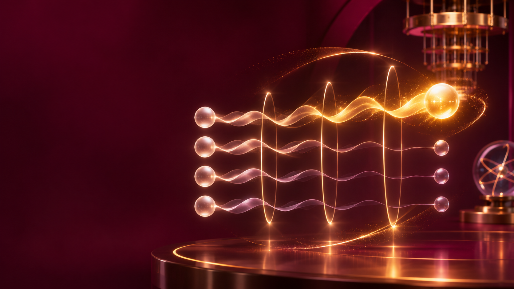
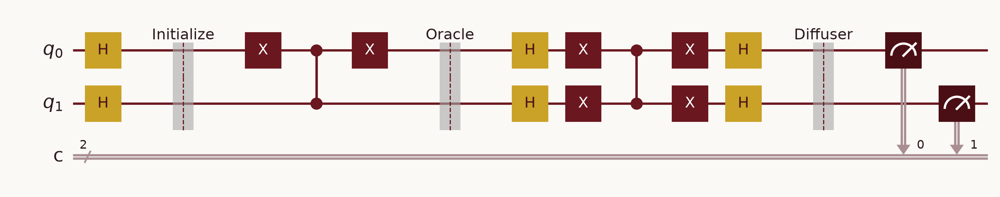

Interactive GuideHow it works, where it's used, and how it's built in Qiskit.
From an equal guess across every item to one answer, found in about √N steps instead of N.
Part 1 · How It Works
Introduction to Quantum Search
A search problem has a search space — every candidate answer — and one or more target solutions hiding somewhere inside it.
Imagine four boxes, labeled 00, 01, 10, 11. Exactly one hides the answer, and nothing on the outside tells you which.
Classical Search vs. Quantum Search
A classical computer checks candidates one by one. In the worst case, it checks all N candidates before finding the answer.
Classical worst-case query count: O(N).
For one million candidates, that can mean up to one million checks.
Both methods take more work as N grows—but Grover grows much more slowly.
The chart uses logarithmic axes so both rising trends fit. Grover gives a quadratic query speedup—not an exponential one.
Overview
Published by Lov Grover in 1996, the algorithm was designed for exactly one job: searching an unstructured space faster than any classical method can, provably.
It doesn't guess the answer directly — it amplifies the probability of measuring the correct one.
The rest of this section walks through each of these four parts, one at a time, with a live simulation for every step.
Problem Formulation
Every candidate is a binary string: n qubits represent N = 2ⁿ candidates at once. 2 qubits ↔ 4 candidates; 3 qubits ↔ 8 candidates.
A function f(x) labels each candidate: f(x) = 1 if x is a correct answer (marked), f(x) = 0 otherwise (unmarked). A problem can have one marked state or several — call the count M.
Searching for ∣101⟩ among 8 possible states
n = 3 qubits, N = 8, M = 1
f(101) = 1, f(x) = 0 for every other 3-bit string
The Oracle
A classical oracle would just return f(x) — a yes/no answer. A quantum phase oracle does something subtler: it leaves the probability of measuring ∣x⟩ completely unchanged, but flips the sign of its amplitude whenever x is marked.
Of∣x⟩ = (−1)^f(x) ∣x⟩
Because probability depends on amplitude squared, that minus sign is invisible to an immediate measurement — nothing to see yet.
This hidden flip is called phase marking. Constructing it from ordinary gates (rather than reading f(x) out loud) relies on a trick called phase kickback, covered next.
Building the Oracle
Flip any qubit whose target bit is 0, apply a controlled-Z, then flip those qubits back — the net effect marks only the chosen box.
Every probability stays at 25% — only the marked box's amplitude turns negative.
The Diffuser
The diffuser reflects every amplitude about their shared average. Once one amplitude is negative, the average sits closer to the other, positive ones — so reflecting about it pushes the marked amplitude up and the rest down.
D = 2∣s⟩⟨s∣ − I
∣s⟩ is the equal-superposition state. Geometrically, D reflects the state vector about ∣s⟩ — the same "fold about the average" idea, expressed as an operator.
Building the Diffuser
Built from Hadamards, X gates, and a multi-controlled phase flip — then the Hadamards and X gates undo themselves around that one phase flip.
One pass of oracle-then-diffuser already pulls most of the probability onto the marked box.
Amplitude Amplification
Interference does the real work. The oracle sets up destructive interference for the unmarked amplitudes and constructive interference for the marked one; the diffuser is what actually converts that setup into a measurable probability shift.
G = D · O
Apply the oracle, then the diffuser — that pair is the Grover operator, G.
Apply G again and again: G, G², G³, … Each application rotates more probability onto the marked state — up to a point, explored next.
Amplitude Amplification
No iterations yet — every box is equally likely.
Worked Example
| Step | Probability of the marked box |
|---|---|
| Start (superposition) | 25% |
| After the oracle | 25% (sign flipped, probability unchanged) |
| After the diffuser — 1 full iteration | ~100% |
One Grover iteration takes the marked box from a 1-in-4 guess to an almost certain answer — the same numbers the live slide and the companion notebook both compute.
Why Amplitude Amplification Works
The state lives in a two-dimensional plane: one direction for the marked answer, one for all unmarked answers together. Each iteration rotates it by 2θ.
For one marked item, θ = arcsin(1/√N). Each iteration adds 2θ; stopping near the marked axis gives the highest success chance.
Mathematical Analysis
r ≈ (π/4)·√(N/M)
N is the search-space size, M the number of marked states. Round r to the nearest whole number of iterations — overshooting or undershooting by even one round costs real probability, as the previous slide showed.
r ≈ (π/4)·√8 ≈ 2.22 → 2 iterations
| 0 iterations | 12.5% |
| 1 iteration | 78.1% |
| 2 iterations | 94.5% |
| 3 iterations | 22.7% |
Mathematical Analysis
The same formula handles M > 1 marked states directly — more marked states means a larger combined amplitude to amplify, so fewer iterations are needed: r shrinks as M grows, for the same N.
Example: N = 16 with M = 4 marked states needs about 1 iteration, versus about 3 for M = 1.
| Classical | Grover | |
|---|---|---|
| Queries needed | O(N/M) | O(√(N/M)) |
This is a proven quadratic speedup in query count — not a claim about total runtime, which depends on how expensive each query actually is. More on that in Part 2.
Part 2 · Applications
Where This Shows Up
In the oracle query model, a black-box search over N possibilities takes O(√N) oracle calls with Grover, versus O(N) classical checks in the worst case.
Finding one entry in an unsorted list or table — the canonical textbook use case, and the one this entire deck has been simulating.
Grover assumes the candidates are already loaded into superposition. For real databases, that data-loading step can itself be expensive — sometimes expensive enough to erase the advantage.
Where This Shows Up
Guessing a symmetric encryption key by trying every possibility is exactly an unstructured search. In an idealized model, Grover reduces the work from about 2ⁿ to about 2ⁿ/² oracle calls.
This is a major reason AES-128 is often considered only "128-bit secure classically, ~64-bit against Grover" — one driver behind recommending AES-256 for long-term, quantum-era security.
Real attacks also pay for building a reversible circuit for the cipher itself, plus hardware and error-correction overhead.
Where This Shows Up
Many optimization problems reduce to searching a huge space of candidate configurations for one that satisfies a condition or scores well enough — structurally the same problem Grover solves.
Each configuration is a candidate; the oracle marks configurations that meet a constraint or exceed a target score.
Grover's core mechanism generalizes beyond exact search — it's the basis for broader amplitude amplification techniques used inside larger optimization algorithms.
Where This Shows Up
Given a Boolean formula, find an assignment of true/false to each variable that makes it true. The search space is every possible assignment — exactly the kind of unstructured space Grover searches.
Encode "is this grid a valid solution?" as the oracle condition, and candidate grids as basis states. A correct oracle marks only the valid completions — the rest of the algorithm is unchanged.
Where This Shows Up
Grover's algorithm rarely appears as the whole solution — more often, it's a computational subroutine other algorithms call when they need to search efficiently.
Selecting the best candidate from a large hypothesis space, or picking training examples, can be framed as a search the oracle can mark.
Grover-style amplitude amplification shows up inside some proposed quantum machine-learning optimization routines — an active, still-maturing research area.
Where This Shows Up
Searching a large space of simulation parameters for ones that satisfy a target condition — a direct application of unstructured search.
Exploring candidate engineering designs, or molecular and materials configurations, for ones meeting a desired property — proposed research directions, not yet production tools.
Read the Speedup Carefully
The oracle is treated as one operation that marks a candidate. In a real problem, building that reversible oracle can be costly; the query count alone does not give total runtime.
Grover helps when the candidates are unstructured and a good candidate can be checked efficiently.
Each iteration needs coherent gates and controlled operations. Noise and limited circuit depth reduce the success probability, so a small ideal simulation is not evidence of a practical speedup.
If the number of marked items is unknown, choosing the iteration count also requires care.
Takeaway: Grover is a rigorous quadratic improvement in oracle queries under its model. Whether it helps an application depends on the oracle cost, hardware, and the full end-to-end task — including the data-loading problem raised for database search.
Part 3 · From Concept to Code
The Qiskit Environment
Qiskit is IBM's open-source SDK for building and running quantum circuits. Qiskit Aer is its simulator — it runs circuits like this one exactly, with no real quantum hardware needed.
from qiskit import QuantumCircuit from qiskit.quantum_info import Statevector from qiskit.primitives import StatevectorSampler
The same three imports the companion notebook uses — nothing exotic.
| Concept | Qiskit construct |
|---|---|
| Initialize | qc.h([...]) |
| Oracle | qc.x(...) + qc.cz(...) + undo the X's |
| Diffuser | H → X → CZ → X → H |
| Measure | qc.measure_all() |
From Pipeline to Circuit
# N = 4 (2 qubits), one marked box qc = QuantumCircuit(2) qc.h([0, 1]) # initialize
Two qubits, two Hadamards — that's the entire "define the problem and initialize" step for N = 4.
def oracle(qc, marked): for qubit, bit in enumerate( reversed(marked)): if bit == '0': qc.x(qubit) qc.cz(0, 1) for qubit, bit in enumerate( reversed(marked)): if bit == '0': qc.x(qubit)
X gates on the "0" bits, a controlled-Z, then the same X gates undo themselves — this is the exact function the companion notebook runs.
From Pipeline to Circuit
def diffuser(qc): qc.h([0, 1]) qc.x([0, 1]) qc.cz(0, 1) qc.x([0, 1]) qc.h([0, 1])
Hadamards, X gates, a controlled-Z, then both undone in reverse — inversion about the mean, built from five lines.
def grover_circuit(marked, iterations): qc = QuantumCircuit(2) qc.h([0, 1]) for _ in range(iterations): oracle(qc, marked) diffuser(qc) return qc
Wrap oracle + diffuser into one reusable function — the iterations argument is exactly the slider from the live slides.
Putting It Together

Every Grover circuit has this same shape: initialize, then as many oracle+diffuser pairs as the iteration count calls for, then measure. What changes between problems is only the oracle and the qubit count.
Recap
Grover's Algorithm — A Beginner's Introduction